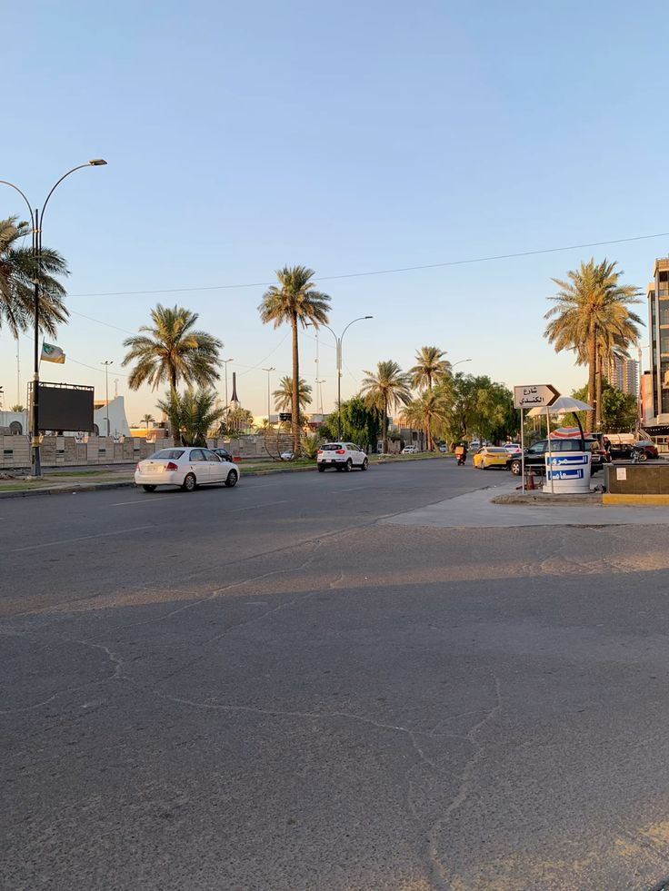
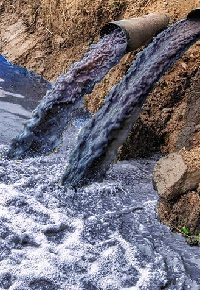
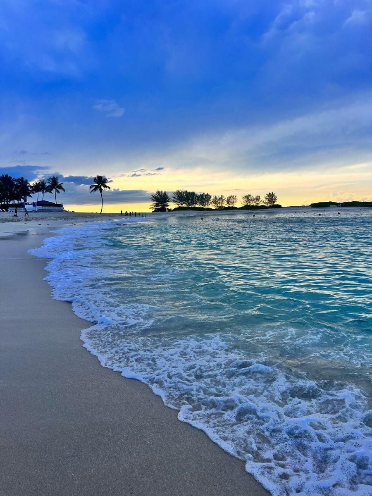
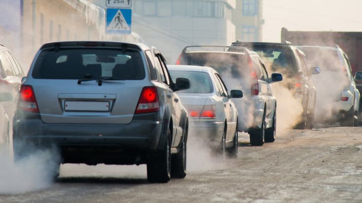
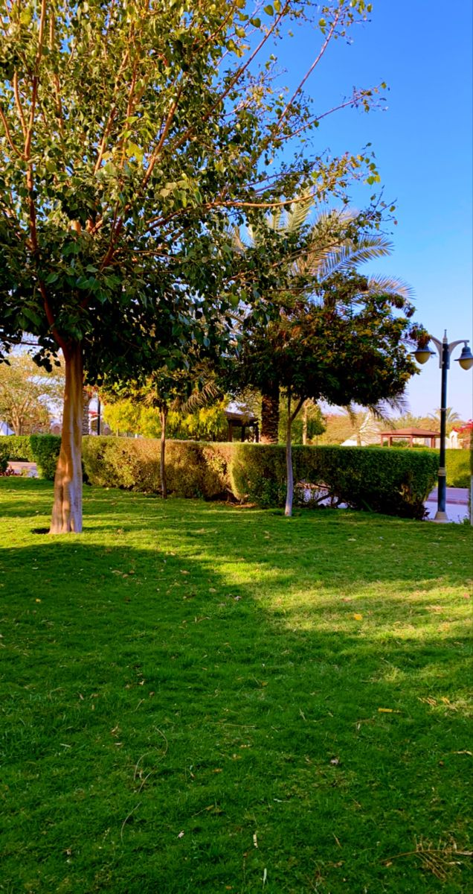
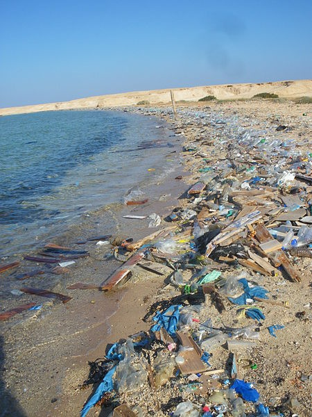
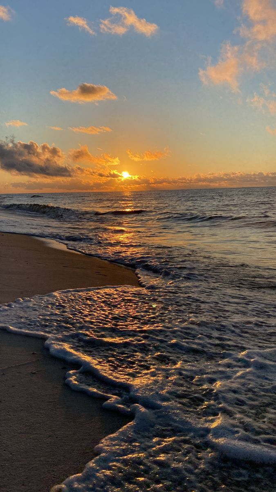
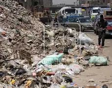
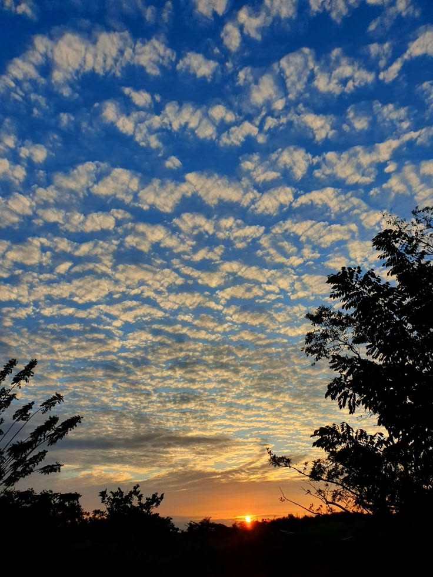
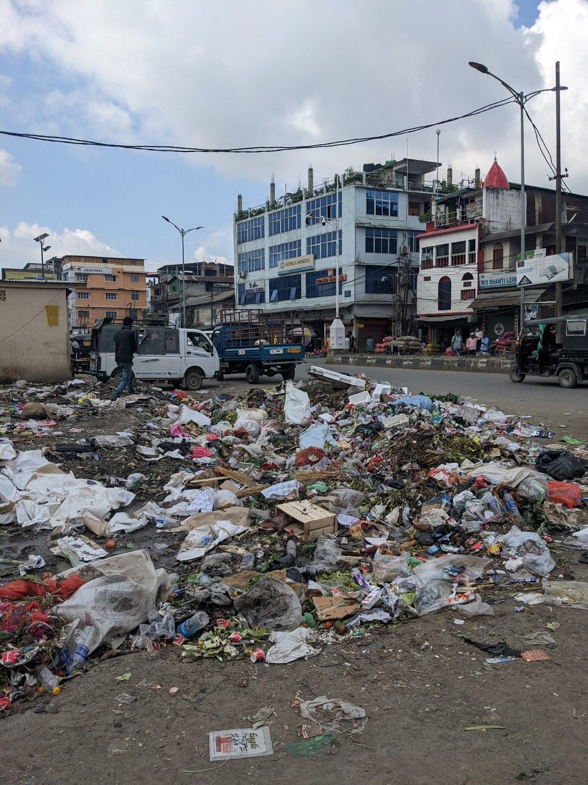

اختياراتك اليوم تصنع مستقبل الغد
هل تتساءل لماذا نهتم بالبيئة؟ البيئة هي أساس حياتنا لأنها توفر لنا الهواء النقي والماء الصالح للشرب والغذاء وتدعم بقاءنا. لا قيمة لأي تقدم تكنولوجي أو مبانٍ جميلة إذا لم نستطع أن نتنفس هواءً نظيفًا أو نشرب ماءً نقيًا. عندما نضر البيئة، فإننا نهدد صحتنا ومستقبلنا. من يتجاهل البيئة اليوم سيتجاهله المستقبل غدًا، لذلك نحن مسؤولون عن حماية كوكبنا والعمل معًا من أجل مستقبل أفضل.
ماذا تريد أن تعيش؟










أنت من تختار
المستقبل مش مكان بنروّحه... إحنا اللي بنصنّعه باختياراتنا.
نحن مبادرة تهدف إلى نشر الوعي البيئي وتشجيع الأفراد على اتخاذ قرارات تحافظ على كوكب الأرض. إذا أردت أن تكون شخصًا مؤثرًا تواصل معنا وسنخبرك بأفضل فرص التطوع القريبة منك.
يمكنك التواصل معنا عبر whatsapp :